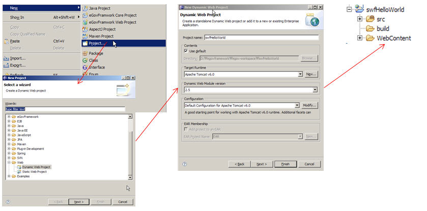
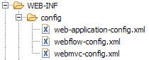

Spring Web Flow의 Hello World 예제
Hello, World
개요
처음으로 접하므로 여기서는 Hello World를 찍어 보면서 실행하는 것을 살펴보도록 하겠다.
Hello World는 두 가지 버전으로 입력되는 값이 없이 단지 Hello, Web Flow 화면을 호출하는 것과 입력값을 가지고 분기 처리 등 서비스 메소드를 실행 후 결과를 화면으로 보여주는 버젼으로 나누어 설명하겠다. 실행하여 보고자 하는 화면 결과는 아래와 같다.

설명
Spring Web Flow는 사용자와 Service를 제공하는 서버 간의 대화하듯한 화면의 이동을 정의하는 것이다.
SWF(Spring Web Flow)는 사용자와 화면 간의 대화 형태로 웹 대화형 시나리오를 중심으로 접근한다.

web.xml
webContent/WEB-INF 아래 web.xml을 아래와 같이 작성한다.
contextConfigLocation의 값으로 /WEB-INF/config/web-application-config.xml을 설정한다.
servlet으로 org.springframework.web.servlet.DispatcherServlet를 등록하고 /spring/* URL 정보를 매핑해준다.
<?xml version="1.0" encoding="ISO-8859-1"?>
<web-app xmlns="http://java.sun.com/xml/ns/j2ee" xmlns:xsi="http://www.w3.org/2001/XMLSchema-instance"
xsi:schemaLocation="http://java.sun.com/xml/ns/j2ee http://java.sun.com/xml/ns/j2ee/web-app_2_4.xsd"
version="2.4">
<!-- Spring Web 어플리케이션을 위한 메인 설정파일을 등록한다. -->
<context-param>
<param-name>contextConfigLocation</param-name>
<param-value>
/WEB-INF/config/web-application-config.xml
</param-value>
</context-param>
<!-- Spring Web 어플리케이션 컨테스트를 로딩한다. -->
<listener>
<listener-class>org.springframework.web.context.ContextLoaderListener</listener-class>
</listener>
<!-- Spring Web 어플리케이션의 맨 앞단 Controller(DispatcherServlet) 를 등록한다. -->
<servlet>
<servlet-name>Spring MVC Dispatcher Servlet</servlet-name>
<servlet-class>org.springframework.web.servlet.DispatcherServlet</servlet-class>
<init-param>
<param-name>contextConfigLocation</param-name>
<param-value></param-value>
</init-param>
<load-on-startup>0</load-on-startup>
</servlet>
<!-- 모든 spring 요청에 대한되는 request를 DispatcherServlet 와 매핑하여 처리 할 수 있도록 한다. -->
<servlet-mapping>
<servlet-name>Spring MVC Dispatcher Servlet</servlet-name>
<url-pattern>/spring/*</url-pattern>
</servlet-mapping>
<welcome-file-list>
<welcome-file>index.html</welcome-file>
</welcome-file-list>
</web-app>
web-application-config.xml
Spring MVC와 Spring Web Flow를 위한 설정 파일은 아래와 같다.

먼저 web-application-config.xml를 살펴보겠다.
<?xml version="1.0" encoding="UTF-8"?>
<beans xmlns="http://www.springframework.org/schema/beans"
xmlns:xsi="http://www.w3.org/2001/XMLSchema-instance"
xmlns:context="http://www.springframework.org/schema/context"
xsi:schemaLocation="
http://www.springframework.org/schema/beans
http://www.springframework.org/schema/beans/spring-beans-2.5.xsd
http://www.springframework.org/schema/context
http://www.springframework.org/schema/context/spring-context-2.5.xsd">
<!-- 어플리케이션 소스를 스캔하여 로딩 하도록 한다. -->
<context:component-scan base-package="org.egovframe.swf.sample.service" />
<!-- 편의를 위하여 Spring MVC 설정과 Spring Web Flow 를 위한 설정을 별도록 분리하여 가져오도록 한다.-->
<import resource="webmvc-config.xml" />
<import resource="webflow-config.xml" />
</beans>
webmvc-config.xml
Spring MVC를 위한 설정 파일
<?xml version="1.0" encoding="UTF-8"?>
<beans xmlns="http://www.springframework.org/schema/beans"
xmlns:xsi="http://www.w3.org/2001/XMLSchema-instance"
xsi:schemaLocation="
http://www.springframework.org/schema/beans
http://www.springframework.org/schema/beans/spring-beans-2.5.xsd">
<!--
flowRegistry에 등록된 flow와 요청되는 path와 매핑해주는 역할을 수행한다.
예제에선 요청되는 .../swfHelloWorld/spring/sample/hello URL 정보를 이용하여 flow 내에서 sample/hello ID로 찾음.
-->
<bean class="org.springframework.webflow.mvc.servlet.FlowHandlerMapping">
<property name="order" value="0" />
<property name="flowRegistry" ref="flowRegistry" />
</bean>
<bean
class="org.springframework.web.servlet.mvc.support.ControllerClassNameHandlerMapping">
<property name="order" value="1" />
<property name="defaultHandler">
<!-- UrlFilenameViewController 는 spring/start 으로 접근하는 path 정보를 이용하여
View 이름을 추출하여 View를 반환하게 된다. 여기서는 tiles의 view를 반환하게 된다. -->
<bean class="org.springframework.web.servlet.mvc.UrlFilenameViewController" />
</property>
</bean>
<!--
Controller에 의해 반환된 View 명을 tiles로 보내 tiles에 미리 정의된 화면을 보여주도록 한다.
-->
<bean id="tilesViewResolver" class="org.springframework.js.ajax.AjaxUrlBasedViewResolver">
<property name="viewClass"
value="org.springframework.webflow.mvc.view.FlowAjaxTilesView" />
</bean>
<!-- tiles 설정 정보를 정의한다. -->
<bean id="tilesConfigurer" class="org.springframework.web.servlet.view.tiles2.TilesConfigurer">
<property name="definitions">
<list>
<value>/WEB-INF/layouts/layouts.xml</value>
<value>/WEB-INF/views.xml</value>
<value>/WEB-INF/sample/views.xml</value>
<value>/WEB-INF/sample/hello/views.xml</value>
</list>
</property>
</bean>
<!-- Dispatches requests mapped to POJO @Controllers implementations-->
<bean class="org.springframework.web.servlet.mvc.annotation.AnnotationMethodHandlerAdapter" />
<!--
Dispatches requests mapped to
org.springframework.web.servlet.mvc.Controller implementations
-->
<bean class="org.springframework.web.servlet.mvc.SimpleControllerHandlerAdapter" />
<!--
requests에 맞는 등록된 FlowHandler 구현부를 연결해준다.
-->
<bean class="org.springframework.webflow.mvc.servlet.FlowHandlerAdapter">
<property name="flowExecutor" ref="flowExecutor" />
</bean>
<!-- Custom FlowHandler for the hello flow-->
<bean name="sample/hello" class="org.egovframe.web.HelloFlowHandler" />
</beans>
webflow-config.xml
Web Flow 관련된 설정 파일
<?xml version="1.0" encoding="UTF-8"?>
<beans xmlns="http://www.springframework.org/schema/beans"
xmlns:xsi="http://www.w3.org/2001/XMLSchema-instance" xmlns:webflow="http://www.springframework.org/schema/webflow-config"
xsi:schemaLocation="
http://www.springframework.org/schema/beans
http://www.springframework.org/schema/beans/spring-beans-2.5.xsd
http://www.springframework.org/schema/webflow-config
http://www.springframework.org/schema/webflow-config/spring-webflow-config-2.0.xsd">
<webflow:flow-executor id="flowExecutor" />
<!-- flow 를 정의한 파일을 가져와 flow registry 구성한다. -->
<webflow:flow-registry id="flowRegistry"
flow-builder-services="flowBuilderServices" base-path="/WEB-INF">
<webflow:flow-location-pattern value="/**/*-flow.xml" />
</webflow:flow-registry>
<!-- Web Flow views 에 커스터마이징 할 수 있도록 확장하여 사용한다. -->
<webflow:flow-builder-services id="flowBuilderServices"
view-factory-creator="mvcViewFactoryCreator" conversion-service="conversionService"
development="true" />
<!-- Web Flow 에서 tiles 를 사용할 수 있도록 설정한다. -->
<bean id="mvcViewFactoryCreator"
class="org.springframework.webflow.mvc.builder.MvcViewFactoryCreator">
<property name="viewResolvers" ref="tilesViewResolver" />
</bean>
</beans>
상세 : Web Flow views 에 커스터마이징 할 수 있도록 확장하여 사용한다
tiles
URL : http://localhost:8080/swfHelloWorld 으로 처음 접근할 때 index.html 파일이 열리게 된다.
index.html
<html>
<head>
<meta http-equiv="Refresh" content="0; URL=spring/start">
</head>
</html>
위에서 보는 것처럼 “spring/start” URL을 호출한다.
spring/start 에 해당하는 화면은 먼저 설정된 tiles 설정 정보에서 찾는다.
<tiles-definitions>
<definition name="start" extends="standardLayout">
<put-attribute name="body" value="/WEB-INF/main.jsp" />
</definition>
</tiles-definitions>
tiles 관련된 것은 http://tiles.apache.org/를 참조하시길 바랍니다.
등록된 tiles 설정 파일은 앞 설정에서 나왔다. 다시 보면
...
<!-- tiles 설정 정보를 정의한다. -->
<bean id="tilesConfigurer" class="org.springframework.web.servlet.view.tiles2.TilesConfigurer">
<property name="definitions">
<list>
<value>/WEB-INF/layouts/layouts.xml</value>
<value>/WEB-INF/views.xml</value>
<value>/WEB-INF/sample/views.xml</value>
<value>/WEB-INF/sample/hello/views.xml</value>
</list>
</property>
</bean>
...
Hello, Web Flow
다시 돌아와서 Hello , Web Flow 를 화면에 찍어 보도록 하겠다.
Web Flow로 해당 화면의 흐름을 작성한 예를 보자.
hello-flow.xml
<?xml version="1.0" encoding="UTF-8"?>
<flow xmlns="http://www.springframework.org/schema/webflow"
xmlns:xsi="http://www.w3.org/2001/XMLSchema-instance"
xsi:schemaLocation="http://www.springframework.org/schema/webflow
http://www.springframework.org/schema/webflow/spring-webflow-2.0.xsd">
<view-state id="hello">
<transition on="say" to="helloworld" />
</view-state>
<view-state id="helloworld">
<transition on="return" to="return" />
</view-state>
<end-state id="return" view="externalRedirect:servletRelative:/start" />
</flow>
자세한 설명은 flow 정의에서 다루고 있다.
간단하게 보면 view-state, end-state로 나눠져 있는 것을 볼 수 있다. 처음으로 존재하는 view-state는 시작점이라고 생각해도 무방하다. 또한 문자 그대로 end-state는 마지막점이다. hello 화면이 맨 처음 나오고 거기서 helloworld 화면이 보이고 다음은 return이라는 마지막 실행을 하는 것이다.
view-state 안쪽의 transition는 화면에서 클릭하여 이동하게 하는 버튼의 실행이라고 할 수 있다. 여기선 say를 눌러서 실행하면 helloworld 라는 view-state로 이동하는 것이다. 마찬가지로 return을 누르면 externalRedirect:servletRelative:/start으로 이동하는 것이다.
view-state에서 별도의 view를 정의하지 않은 경우 id를 가지고 view를 가져오게 된다. 여기서는 hello 라는 id가 곧 view 명이 되게 된다.
default는 flow.xml과 같은 디렉토리에 있는 화면소스(JSP, xhtml, 등)을 찾게 된다. 여기선 tiles로 정의된 부분을 참조한다.
…/hello/views.xml 파일 내용을 살펴보면,
...
<definition name="hello" extends="standardLayout">
<put-attribute name="body" value="/WEB-INF/sample/hello/hello.jsp" />
</definition>
...
로 화면에 해당되는 hello.jsp 를 가져오는 것을 확인할 수 있다.
그렇다면 transition은 화면에서 발생한 이벤트와 매핑을 할까? hello.jsp 소스를 잠시 보겠다.
<%@ taglib prefix="form" uri="http://www.springframework.org/tags/form"%>
<!DOCTYPE html PUBLIC "-//W3C//DTD XHTML 1.0 Transitional//EN"
"http://www.w3.org/TR/xhtml1/DTD/xhtml1-transitional.dtd">
<html>
<head>
<title>Welcome to Spring Web Flow</title>
</head>
<body>
<h1>Welcome to Spring Web Flow</h1>
<form:form id="start">
<input type="submit" name="_eventId_say" value="Click to say hello!" />
</form:form>
</body>
</html>

보는 바와 같이 form으로 둘러싸인 곳에 해답은 있다. <input type=“submit” name=“_eventId_say” …. /> 에서 name 을 보면 _eventId_say로 답을 찾을 수 있다.
_eventId가 답이다. say는 transition의 on과 같음을 확인할 수 있다. eventId 에 정의된 특정 위치의 문자열을 가지고 transition을 분석하다.
transition에 대한 내용은 flow 정의에서 자세히 살펴보길 바란다. eventId 가 “say”를 가지고 form 이 전달되면 flow 정의 flow 정의에 따라 transition을 찾고 그에 맞는 state로 넘어가게 된다.
결과는 별로의 값을 가지고 보여주는 화면은 아니고 단지 아래와 같은 화면을 보여주도록 되어 있다.

다음은 입력값이 있는 예를 살펴 보도록 하겠다.
Hello, Web Flow with input value
먼저 flow 정의 파일인 hello2-flow.xml 을 보도록 하자. 실행 시나리오는 on-start ⇒ view-state ⇒ action-state ⇒ decision-stat ⇒ end-state 이다.
hello2-flow.xml
<?xml version="1.0" encoding="UTF-8"?>
<flow xmlns="http://www.springframework.org/schema/webflow"
xmlns:xsi="http://www.w3.org/2001/XMLSchema-instance"
xsi:schemaLocation="http://www.springframework.org/schema/webflow
http://www.springframework.org/schema/webflow/spring-webflow-2.0.xsd">
<on-start>
<evaluate expression="helloService.sayMessage()" result="flowScope.message" />
</on-start>
<view-state id="hello2" model="message">
<binder>
<binding property="str" required="true" />
</binder>
<transition on="proceed" to="actionHello" />
<transition on="return" to="return" />
</view-state>
<action-state id="actionHello">
<evaluate expression="helloService.addHello(message)" />
<transition on="yes" to="moreDecision" />
<transition on="no" to="hello" />
</action-state>
<decision-state id="moreDecision">
<if test="helloService.getDecision(message)" then="helloworld2" else="return" />
</decision-state>
<view-state id="helloworld2">
<transition on="return" to="return" />
</view-state>
<end-state id="return" view="externalRedirect:servletRelative:/start" />
</flow>
</xml>
보여 주고자 하는 것은 hello2 화면(view-state)에서 입력 데이터를 객체에 바인딩하고, helloService 서비스 객체를 통해 addHello 메소드 실행, 그 후 결과에 따라 분기문(decision-state)을 통과하여 helloworld2 화면으로 가는 것이다.
간략하게 설명하면, on-start는 flow를 처음 실행할 때 선행하여 실행된다. 여기서는 helloService의 sayMessage를 실행하여 flowScope 내의 message 객체로 저장한다.
HelloService .java
...
@Service("helloService")
public class HelloService implements Iservice {
public Message sayMessage() {
return new Message();
}
...
}
flow가 시작할 때 첫 번째로 만나는 view-state는 시작점으로 인식한다. 따라서 view-state “hello2”는 시작점에 해당한다.
hello2.jsp 를 화면에 보여주는데 앞단의 예제와 같다. Spring MVC의 tiles를 이용하여 보여주게 된다.
views.xml
...
<definition name="hello2" extends="standardLayout">
<put-attribute name="body" value="inhello2.body" />
</definition>
<definition name="inhello2.body" template="/WEB-INF/sample/hello2/main.jsp">
<put-attribute name="helloSection" value="/WEB-INF/sample/hello2/hello.jsp" />
</definition>
...
hello.jsp
...
<form:form method="post" >
<p>
to Who : <input type="text" id="str" name="str" value=" World ~*"/>
<script type="text/javascript">
Spring.addDecoration(new Spring.ElementDecoration({
elementId : "str",
widgetType : "dijit.form.ValidationTextBox",
widgetAttrs : { promptMessage : "for who ? ", required : true }}));
</script>
<br>
</p>
<input id="proceed" type="submit" class="button"
name="_eventId_proceed" value="say">
<script type="text/javascript">
Spring.addDecoration(new Spring.ValidateAllDecoration({elementId:'proceed', event:'onclick'}));
</script>
<input type="submit" class="button"
name="_eventId_return" value="index">
</form:form>
...
상단의 화면은 아래 hello2-flow.xml 내의 view-state와 매핑된다.
여기서 봐야 할 부분은 화면 내의 str 이름의 input 데이터를 message라는 객체로 바인딩하는 부분인다.
...
<view-state id="hello2" model="message">
<binder>
<binding property="str" required="true" />
</binder>
<transition on="proceed" to="actionHello" />
<transition on="return" to="return" />
</view-state>
...
이벤트에 해당하는 proceed 버튼을 클리하면 다음 state로 이동하게 된다.
...
<transition on="proceed" to="actionHello" />
...
actionHello은 아래와 같다. 하는 기능은 helloService 객체의 addHello 메소드 호출이다.
...
<action-state id="actionHello">
<evaluate expression="helloService.addHello(message)" />
<transition on="yes" to="moreDecision" />
<transition on="no" to="hello" />
</action-state>
...
addHello 메소드는 아래와 같다. 반환되는 값이 boolean인 것을 주목할 필요가 있다. 리턴되는 boolean 값은 transition의 yes, no 와 매핑된다.
...
public boolean addHello(Message msg){
try{
msg.setStr("Hello,"+msg.getStr());
}catch (Exception e) {
return false;
}
return true;
}
...
다음 나오는 decision-state는 아래와 같이 분기문의 기능을 수행한다.
...
<decision-state id="moreDecision">
<if test="helloService.getDecision(message)" then="helloworld2" else="return" />
</decision-state>
...
helloworld2 화면으로 이동하게 되면 아래와 같은 jsp 소스를 확인할 수 있다. message 객체의 str 값을 EL 을 이용하여 ${message.str} 으로 보여주고 있다.
<%@ taglib prefix="form"
uri="http://www.springframework.org/tags/form" %>
<h2>Hello Message?</h2>
<form:form>
<b>Step two :</b>
<fieldset>
<div class="field">
<div class="label">
<label>${message.str}</label>
</div>
</div>
<div class="buttonGroup">
<input type="submit" class="button" name="_eventId_return" value="index">
</div>
</fieldset>
</form:form>
화면을 다시 보면
say 버튼을 누르면,
Hello , 뒤에 넣었던 문장이 붙어서 나오게 된다.